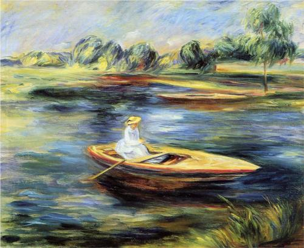

Why Write? by Mavis Gallant

Young Woman Seated in a Rowboat by Renoir
Settling in after cooking and eating a delicious pasta e broccoli (recipe from Rachel Eats) with a glass of wine and these words from Mavis Gallant:
Samuel Beckett, answering a hopeless question from a Paris newspaper—“Why do you write?“—said it was all he was good for: “Bon qu’a ça.” Georges Bernanos said that writing was like rowing a boat out to sea: The shoreline disappears, it is too late to turn back, and the rower becomes a galley slave. When Colette was seventy-five and crippled with arthritis she said that now, at last, she could write anything she wanted without having to count on what it would bring in. Marguerite Yourcenar said that if she had inherited the estate left by her mother and then gambled away by her father, she might never have written another word. Jean-Paul Sartre said that writing is an end in itself. The Polish poet Aleksander Wat told me that it was like the story of the camel and Bedouin; in the end, the camel takes over. So that was the writing life: an insistent camel. —Mavis Gallant, Paris Stories
· · · · · · · · · · · · · · · · · · · ·